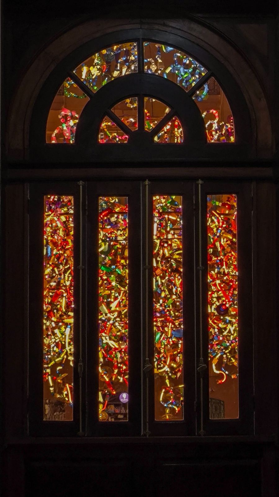
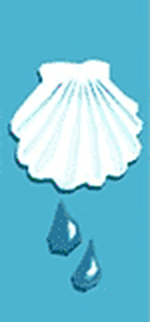
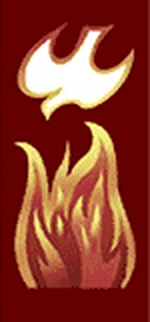
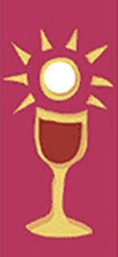
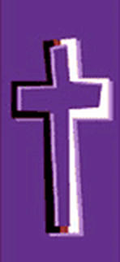
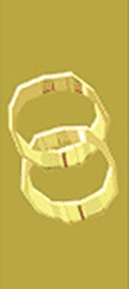
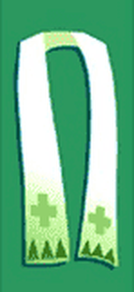
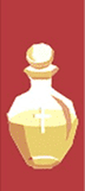

The Seven Sacraments
[PLACEHOLDER IMAGE, NOT HOLY FAMILY]

Baptism
Confirmation
Eucharist
Reconciliation
Matrimony
Holy Orders
Anointing of the Sick
[LOGO AND GRAPHIC ORIGINALS — VECTOR / LAYERED FILES? — CONFIRM]
[DOCTRINAL CONTENT — DRE AND/OR PASTOR TO REVIEW AND APPROVE ALL TEXT]
SACRAMENTS OF INITIATION
Baptism, Confirmation and Eucharist lay the foundations of every Christian life. We are born anew by Baptism, strengthened by the Sacrament of Confirmation, and receive in the Eucharist the food of eternal life.
Baptism
The first of the seven sacraments, and the “door” which gives access to the other sacraments. Baptism is the first and chief sacrament of forgiveness of sins because it unites us with Christ, who died for our sins and rose for our justification. Baptism, Confirmation, and Eucharist constitutes the “sacraments of initiation” by which a believer receives the remission of original and personal sin, begins a new life in Christ and the Holy Spirit, and is incorporated into the Church, the body of Christ. The rite of Baptism consists in immersing the candidate in water, or pouring water on the head, while pronouncing the invocation of the Most Holy Trinity: the Father, the Son, and the Holy Spirit.
(Catechism of the Catholic Church, p. 867)
Eucharist
The ritual, sacramental action of thanksgiving to God which constitutes the principal Christian liturgical celebration of and communion in the paschal mystery of Christ. The liturgical action called the Eucharist is also traditionally known as the Holy Sacrifice of the Mass. It is one of the seven sacraments of the Church; the Holy Eucharist completes Christian initiation.
The Sunday celebration of the Eucharist is at the heart of the Church’s life.
(Catechism of the Catholic Church, p. 877)
Confirmation
One of the Sacraments of Initiation into the Church, together with Baptism and Eucharist. Confirmation completes the grace of Baptism by a special outpouring of the gifts of the Holy Spirit, which seal or “confirm” the baptized in union with Christ and equip them for active participation in the worship and apostolic life of the Church.
(Catechism of the Catholic Church, p. 872)
Sacraments at the Service of Communion
These sacraments help members serve the community.
Marriage
A covenant or partnership of life between a man and woman, which is ordered to well-being of the spouses and to the procreation and upbringing of children. When validly contracted between two baptized people, marriage is a sacrement.
(Catechism of the Catholic Church, p. 887)
Vocation to the Priesthood and Religious Life
The calling or destiny we have in this life and hereafter, God has created the human person to love and serve him; the fulfillment of this vocation is eternal happiness. Christ calls the faithful to the perfection of holiness. The vocation of the laity consists in seeking the kingdom of God by engaging in temporal affairs and directing them according to God’s will. Priestly and religious vocations are dedicated to the service of the Church as the universal sacrament of salvation.
(Catechism of the Catholic Church, p. 903)
Sacraments of Healing
These sacraments celebrate the healing power of Jesus.
Reconciliation
The sacrament celebration in which, through God’s mercy and forgiveness, the sinner is reconciled with God and also with the Church, Christ’s Body, which is wounded by sin.
(Catechism of the Catholic Church, p. 896)
The basic requirement for a good confession is to have the intention of returning to God like the “prodigal son” and to acknowledge our sins with true sorrow before the priest.
“To those who have been far away from the sacrament of Reconciliation and forgiving love, I make this appeal: come back to this source of grace, do not be afraid! Christ himself is waiting for you. He will heal you, and you will be at peace with God!”
(Pope John Paul II)
Anointing of the Sick
One of the seven sacraments, also known at the “sacrament of the dying,” administered by a priest to a baptized person who begins to be in danger of death because of illness or old age, through prayer and the anointing of the body with the oil of the sick. The proper effects of the sacrament include a special grace of healing and comfort to the Christian who is suffering the infirmities of serious illness or old age, and the forgiving of the person’s sins.
(Catechism of the Catholic Church, p. 866)
Anointing of the sick is intended for the strengthening and healing of those who are ill, elderly or about to undergo an operation. It is a normal part of Catholic life not just for the dying, but for anyone who is seriously ill. It may be received when a person is at home or in the hospital.